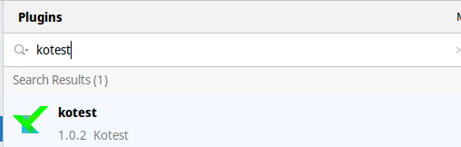

Release 4.1
The Kotest team is pleased to announce the release of Kotest 4.1.0. This minor feature release is packed with goodies including the first public release of the Intellij plugin. In this blog post we'll cover some of the more notable features and changes but for the full list see the changelog.
Kotest Plugin
Let's start with the most exciting news. As part of the 4.1.0 release cycle, we've released the first public version of the Kotest plugin for Intellij. The plugin is available in the Jetbrains plugin repository, so hop on over to settings -> plugins and search for "kotest".

As this is the first release that will be used by the majority of users, bugs will likely be found. If you do encounter an issue, please open a ticket here.
The plugin provides gutter run icons for specs, top level tests, and nested tests.

The plugin additionally provides a tool window view which displays the structure of your tests. The window describes the currently selected test file, which includes any specs defined in that file and tests contained inside those specs. The tree layout will mirror the structure of your tests for easy navigation.
The tool window will include lifecycle callback methods (such as before / after test) if defined, as well as included test factories.
Clicking on a spec, test, include or callback will navigate directly to that element in the source editor.

For full details on the features provided by the plugin, check out the readme.
Note: In order to support this plugin, the behind the scenes code that fooled Intellij into thinking Kotest specs were Junit tests has been removed. This means that unless you have the plugin installed, you won't see the green play icon anymore on the class name.
Kotlintest aliases removed
With release 4.0 of Kotest, the project was renamed from Kotlintest. To aid migration, we created aliases from the kotlintest packages to the kotest packages for common imports.
With the release of 4.1 these aliases have been removed.
Highlight diff when comparing data classes
When comparing two data classes for equality, previously you had to look through the fields to see which one(s) didn't match up. Instead now, the failure output will highlight the differences for you.
For example, given the following data class:
data class Foo(val a: String, val b: Boolean, val c: Double)
And then executing this:
val a = Foo("hello", true, 1.0)
val b = Foo("world", true, 1.3)
a shouldBe b
Will give the following output:
data class diff for Foo
Expected :Foo(a=world, b=true, c=1.3)
Actual :Foo(a=hello, b=true, c=1.0)
<Click to see difference>
org.opentest4j.AssertionFailedError: data class diff for Foo
├ a: expected:<"world"> but was:<"hello">
└ c: expected:<1.3> but was:<1.0>
Integration with Testcontainers
Test containers is a popular Java library that supports lightweight, throwaway instances of databases, message queues, elasticsearch and so on. And now Kotest has a module that allows easy integration into the test lifecylce.
Add the kotest-extensions-testcontainers module to your build and then you can register a test container like this:
val testStartable = SomeTestContainer()
listeners(testStartable.perTest())
Notice the .perTest() function which creates a listener that will stop and start the container between tests. If you want a container that only starts and stops once per spec, then use the following:
val testStartable = SomeTestContainer()
listeners(testStartable.perSpec())
'x' variants for Specs
The popular javascript frameworks and RSpec in Ruby have popularized the describe / it layout style for tests.
Kotest has supported this since version 1.0 in the form of the DescribeSpec. These other frameworks also provide
an easy way to disable a test, by replacing describe with xdescribe and it with xit. Kotest also supports this.
Starting with 4.1 Kotest now rolled out the same functionality to the other styles. For example, you can disable a given
block in BehaviorSpec by using xgiven, you can describe a context block in FunSpec with xcontext and so on.
A full example in the FunSpec style.
class MyFunSpec : FunSpec({
xtest("a disabled test") {
// this test will not be invoked
}
xcontext("this context is disabled") {
test("and so this test is by extension") {
}
}
})
See full details on the styles page.
Removing test prefixes from test output
Following on from the previous section, when you use certain specs, the test names are prefixed with Describe:, or Feature: and so on in the output.
This adds extra noise to the output and in retrospect should not have been added. Starting with 4.1 you can now disable these
test prefixes by setting includeTestScopePrefixes to false in your project config.
Note: In 4.2.0 this setting will be true by default.
Invocation level timeouts
Kotest has the option to apply a timeout to your tests through config on the test case.
test("some test").config(timeout = 3000.milliseconds) { }
This timeout applies to all invocations of that test case. So if you have invocations set greater than 1, then the timeout is shared between all invocations. Starting with 4.1 you can now apply a timeout at the invocation level.
test("some test").config(timeout = 3000.milliseconds,
invocationTimeout = 250.milliseconds,
invocations = 10) { }
Parallel test execution
Kotest has for a long time, had the ability to run specs in parallel. Starting with 4.1 you can run individual test cases in parallel.
Override the threads val inside your spec class to greater than 1. Note: This feature is experimental and only applies to the single instance isolation mode.
All scopes are now coroutine scopes
Leaf test cases have always been coroutine scopes since release 3.2 of Ko(tlin)Test. This means you can launch a coroutine directly in the test
block without needing to provide a scope like GlobalScope or your own instance of CoroutineScope.
test("some test") {
launch {
delay(100)
}
}
Previously, parent scopes in test styles that allow nesting, were not themselves coroutine scopes. This has been changed in 4.1.
Now you can write a test like this:
describe("some test") {
launch {
delay(100)
it("should do something") {
launch {
delay(100)
}
}
}
}
Make beforeProject and afterProject as suspend function
Another feature that was more an oversight than anything else - the beforeProject and afterProject callbacks inside ProjectListener are now suspendable functions.
Assert softly with receiver
You might already be using assertSoftly to allow a test to finish before throwing all the failures at once. Now you can do the same but with a receiver.
For example, rather than write
val person = ...
assertSoftly {
person.name shouldBe "sam"
person.age shouldBe 99
person.city shouldBe "Chicago"
}
You can now do:
val person = ...
person.assertSoftly {
name shouldBe "sam"
age shouldBe 99
city shouldBe "Chicago"
}
Better shrink information
If you're using the property test framework you'll notice the improved shrinking output. This now includes both the reason for the original failure (with the original args) and the reason for the shrunk failure (with the shrunks args).
For example, given a silly test that checks that any string reversed is the same as the input string:
checkAll<String> { a ->
a shouldBe a.reversed()
}
This will be true for the empty string and all single char strings, and then false for most other strings.
Property test failed for inputs
0) "!s:?XBy;pq?`$3V70cqoO$zlO&%bUwafP1nF73gMeyQ[RzehtY36"
Caused by org.opentest4j.AssertionFailedError: expected:<"63YthezR[QyeMg37Fn1PfawUb%&Olz$Ooqc07V3$`?qp;yBX?:s!"> but was:<"!s:?XBy;pq?`$3V70cqoO$zlO&%bUwafP1nF73gMeyQ[RzehtY36"> at
com.sksamuel.kotest.property.ForAll2Test$1$1$1.invokeSuspend(ForAll2Test.kt:19)
com.sksamuel.kotest.property.ForAll2Test$1$1$1.invoke(ForAll2Test.kt)
io.kotest.property.internal.ProptestKt$proptest$$inlined$forEach$lambda$1.invokeSuspend(proptest.kt:28)
io.kotest.property.internal.ProptestKt$proptest$$inlined$forEach$lambda$1.invoke(proptest.kt)
Attempting to shrink arg "!s:?XBy;pq?`$3V70cqoO$zlO&%bUwafP1nF73gMeyQ[RzehtY36"
Shrink #1: "!s:?XBy;pq?`$3V70cqoO$zlO&" fail
Shrink #2: "!s:?XBy;pq?`$" fail
Shrink #3: "!s:?XBy" fail
Shrink #4: "!s:?" fail
Shrink #5: "!s" fail
Shrink #6: "!" pass
Shrink #7: "as" fail
Shrink #8: "a" pass
Shrink #9: "s" pass
Shrink #10: "aa" pass
Shrink result (after 10 shrinks) => "as"
Caused by org.opentest4j.AssertionFailedError: expected:<"sa"> but was:<"as"> at
com.sksamuel.kotest.property.ForAll2Test$1$1$1.invokeSuspend(ForAll2Test.kt:19)
com.sksamuel.kotest.property.ForAll2Test$1$1$1.invoke(ForAll2Test.kt)
io.kotest.property.internal.ShrinkfnsKt$shrinkfn$1$invokeSuspend$$inlined$with$lambda$1.invokeSuspend(shrinkfns.kt:19)
io.kotest.property.internal.ShrinkfnsKt$shrinkfn$1$invokeSuspend$$inlined$with$lambda$1.invoke(shrinkfns.kt)
Property Test Listeners
The forAll and checkAll property test functions accept a PropTestConfig object to configure a property test.
This object now contains a listeners field, to which you can attach PropTestListener instances. This allows you to
run setup / teardown code before and after a property test, like you can for regular tests.
For example.
val listener = object : PropTestListener {
override suspend fun beforeTest() {
println("Startup")
}
override suspend fun afterTest() {
println("Shutdown")
}
}
val propConfig = PropTestConfig(listeners = listOf(listener))
checkAll<String, String>(10, propConfig) { a, b ->
a.length + b.length shouldBe (a + b).length
}
Thanks
Huge thanks to all who contributed to this release.
AJ Alt, Albert Attard, Amy, Ashish Kumar Joy, ataronet, Attila Domokos, bbaldino, bright_spark, Caroline Ribeiro, Christian Nedregård, crazyk2, George Wilkins, Harry JinHyeok Kang, James Pittendreigh, Leonardo Colman Lopes, Lyall Jonathan Di Trapani, Martin Nonnenmacher, Maxime Suret, mwfpope, Nikita Klimenko, Nimamoh, Octogonapus, Paul, Robert Macaulay, Robert Stoll, Ron Gebauer, Sebastian Schuberth, Sergei Bulgakov, sharmabhawna, sksamuel, Steffen Rehberg